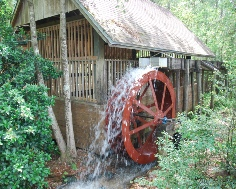
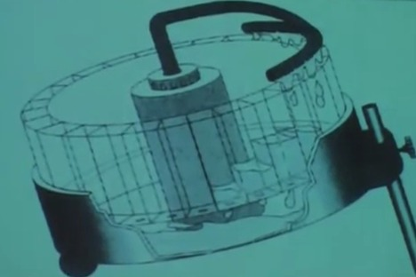
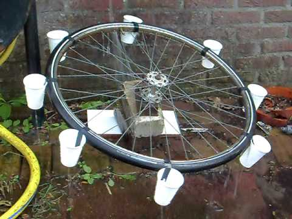
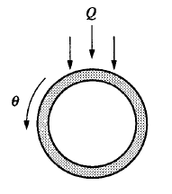
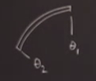
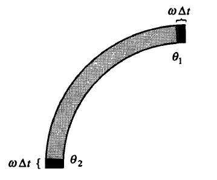
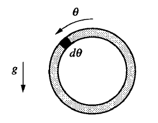
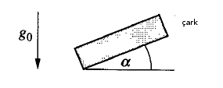

Ders 15
Dersimizin kaos bölümüne geldik. Kaosu bir su çarkı örneğinde göreceğiz, su çarkını biliyoruz, eğer bir yerde doğal su akışı varsa oraya çark konabilir, su düşerken çarkı döndürür.

Bizim işleyeceğimiz su çarkı biraz değişik,

Bu tam bir su çarkına benzemiyor biliyorum. Bu çarkta dönen kısım yatay, bir su veren mekanizmanın altında. Bu yatay kısım kaldırılıp indirilebiliyor, yani yüzeye bir eğim halinde tutulabiliyor, bu eğimi yandaki bir vida ile ayarlayabiliyoruz [1]. Sistemimizin bir parametresi bu olacak.
Mekanizmanın ortasındaki blok bir pompa, altta biriken suyu yukarı çekiyor, ve iki yana ayrılan bir boru ve su veren duş gibi bir sistemle hemen altındaki kutucuklara suyu veriyor. Duştaki su akışı tam ayrımın olduğu noktada en fazla, yanlara doğru gittikçe azalıyor. Kutucukların altında delik var, orada biriken şu aşağı yavaş yavaş mekanizmanın tabanına gidiyor, ve oradan pompayla yukarı çekiliyor, döngü devam ediyor. Kutucuklar birbirinden tamamen bağımsız.
Bu sistemde sarkacımsı bir davranış olması şaşırtıcı olmamalı, üstte olan kutucuklarda biriken su onların ağırlığını arttıracak, eğim yüzünden bu ağırlık aşağı inmek isteyecek, bir dönüş hareketi ortaya çıkacak, tabii o dönüş daha boş olan kutucukları su akışı altına getirecek, böyle devam edecek.
Sistemin yataylık haricindeki bir diğer parametresi dönüş azaltmak için kullanılabilecek bir fren / sürtünme parametresi. Bu sürtünmeyi arttırınca dönüş daha zorlaşıyor.
Soru şu: bu sistem nasıl davranır, çark birörnek şekilde mi döner, tek bir yönde mi döner, yoksa sağa sola mı periyotsal şekilde mi döner, yoksa kaotik şekilde me davranır?
Not: Alternatif bir su çarkı mekanizması alttadır. Kıyasla [1] sistemi daha "temiz" tabii, çünkü bir devridaim var, su hep sistem içinde kalıyor. [2] ile etraf sırılsıklam olabilir (!)

Bu sistem [2] daha basit, üstten sabit oranda / akışta su veriliyor, ve su o anda tam altında olan tek bir bardağa gidiyor. Bardaklarda ufak delik var, sabit oranda su kaybediyorlar.
Bu ve önceki çark kaotik davranış gösterir, tekerlek kaotik / beklenmeyen şekillerde bir sağa bir sola doğru dönecektir.
Kaos kavramının müthiş dramatik bir şey olacağını bekleyenler video'yu izledikten sonra fikrini değiştirmiş olabilir bu arada. Kargaşa karmaşa bekleyen vardı belki. Sağa ya da sola dönüş var, vs. Fakat tahmini zor olan, acaba biraz sonra, ya a 5-10 salınım sonrasında çark sağa mı sola mı dönüyor olacak? Bunun tahmini gerçekten çok zor.
Kaotik su çarkı üzerinde durmamızın sebebi şu: sistemi tarif eden denklemler kaostaki ünlü Lorenz denklemlerinin mekanik dünyadaki tıpatıp karşılığı. Lorenz denklemleri kaosta merkezi bir yere sahip, ve onları görsel olarak hayal etmek istiyorsak su çarkı kullanışlı. Sistem ayrıca düşük dereceli (iki, üç dereceli) normal diferansiyel denklemlerin (ODE) nerede faydalı olabileceğini gösteriyor. Bazıları düşünüyor ki "bu tür denklemler bilimde ne işe yarar". Birazdan göreceğiz çarkı temsil eden birkaç kısmi diferansiyel denklemi (-PDE-, ki daha çetrefil olabilirler) alacağız, ve birkaç matematiksel takla ile onları 3 tane ODE ile temsil edebileceğiz.
Birazdan anlatacaklarım kitabım [3]'ün 9. bölümünden. Sistemi tarif eden denklemler sıvı dinamiğinden (fluid dynamics) geliyor. Grafik olarak çarka üstten bakalım, ve bizi ilgilendiren parametreleri gösterelim,

Notasyon,
$\omega(t)$ = çarkın açısal hızı
$\theta$ = çark üzerindeki bir noktanın açısal yeri (en üst sıfır derece)
$Q(\theta)$ = suyun sisteme akışı, pompalanma hızı. Bu hız $\theta$'ya bağımlı çünkü suyun akışının $\theta$'ya göre bir "dağılımı" var. Daha önce belirttiğimiz gibi borunun iki yana ayrıldığı yerde en çok akış, yanlarda (o duş başlığı gibi duran parçanın yanlarında) biraz daha az, başlıktan uzaktan olan yerlerde hiç. Bu azlık, çokluk, yokluk bir dağılıma sahip.
$r$ = çarkın yarıçapı. Kutucukların belli bir genişliği var, yarıçapa bu genişlik te dahil mi? Değil, bu genişlik çok küçük olduğu için iç yarıçap, dış yarıçap gibi bir ayrım yapmayacağım.
$m(\theta, t)$ = suyun tüm kutucuklar üzerinden kütle, doluluk dağılımı. [1] videosunda farkettiysek suyun tüm kutucuklardaki dolululuğu bir histogram görüntüsü yaratıyordu sanki [zaten onun için kutucuklar ve yeşil renkli su kullanılmış herhalde, bu dağılım görülebilsin diye]. O zaman $\theta_1$ ve $\theta_2$ arasındaki yoğunluk
$$ M = \int_{\theta_1}^{\theta_2} m(\theta, t) \mathrm{d}\theta $$
ile hesaplanır.
Birazdan göstereceğim matematiksel türetiş MİT'den arkadaşım Paul Matthews tarafından yapıldı, Matthews'un oldukça çok sıvı dinamiği tecrübesi vardı, bu analizi ilk yapan o, ve sağolsun denklemleri bu derste kullanmama izin verdi. Matthews bu kaotik su çarkını ilk tasarlayan hoca Malkus ile beraber çalışıyordu. İnceleyeceğimiz değişkenler, ki bunlar tabii ki zamana bağlı olan değişkenler $\omega(t)$, ve $m(\delta,t)$. Bu iki değişkeni tanımlayan formülleri yazmak istiyoruz, sistemi tanımlayan / idare eden bu formüller olacak. Türetelim,
1) Kütlenin muhafazası
Kütle derken su kütlesinden bahsediyoruz, bir sıvı sistemi için muhafaza şartı bir süreklilik denklemi (continuity equation) demektir. Türetildikten sonra bu denklem,
$$ \frac{\partial m}{\partial t} = Q - Km - \omega \frac{\partial m}{\partial \theta} \qquad (1) $$
olacak. Sisteme giren kütle $Q$. Çıkan $Km$, ki $K$ bir sabit. Çıkan kütleyi şöyle tarif etmek mümkün: bahsettiğimiz gibi kutucukların altında delikler var, ve bu deliklerden çıkan suyun miktarı o anda mevcut suya oranlı olmaz mı? Cevap evet, çünkü mevcut su basınç yaratıp delikten daha hızlı su çıkmasına sebep olur, oran $K$ sabiti üzerinden. Akışkanlığı inceleyenler bu dinamiğin daha çetrefil olabileceğini de bilirler, fakat en basit model bu, gerçeğe çok uzak olduğu da söylenemez.
Üçüncü terim taşınma / yer değiştirme / transportasyon terimi, bu terime göre mesela çarkın dönüşü sonrası su olmayan herde artık su olması durumu ortaya çıkabilir, en altta olan dolu kutucuk sağa kayıp bir alta iniyor diyelim, ve en tepede yeni bir boş kutucuk en üste geliyor, vs. Orta kısımlardaki yer değişimi önemli değil çünkü onlar kazanç ya da kayıp yaratmıyorlar.
Bu denklemi türetelim şimdi. Çark üzerinde bir $[\theta_1,\theta_2]$ kesiti düşünelim.

Bu kesitteki su miktarı için
$$ M = \int_{\theta_1}^{\theta_2} m(\theta, t) \mathrm{d}\theta \qquad (4) $$
formülünü vermiştik, bu formülün vereceği sonuç zamana göre değişecektir tabii ki. O zaman şu soruyu soralım, $\Delta t$ zaman aralığında ne olur? Nihai amacımız $m$ için bir diferansiyel denklem türetmek olduğuna göre bu soruyu sormak mantıklı. Şu anda içinde olduğumuz $t_1$'den sonraki bir diğer $t_2$ anına kadar geçen zamanda ne olur? Kütledeki değişim zaman farkı çarpı çarkın her yerinden içeri giren kütle, eksi dışarı çıkan kütle. Bir de transportasyon var tabii,

İçeri giren $\omega$ hızının $\Delta t$ zamanında kapsadığı alan, $\theta_1$ için $m(\theta_1) \omega \Delta t$, dışarı çıkan $m(\theta_2) \omega \Delta t$. "Ama $\theta_1$'in tam üzeri mi, yanı değil mi?" diye sormak akla geliyor belki, ayrıca muhakkak $\Delta t$ içindeki farklı yerlerde $m$'nin değişik olacağı savunulabilir, fakat limite giderken $\Delta t$ sonsuz küçüleceği için işin matematiği dengeleniyor, bu sebeple noktasal $m(\theta_i)$'leri kullanmak mümkün. Bu numara bu tür modellemelerde kullanılan klasik yaklaşıksallama tekniklerden biri. Ayrıca ortadaki parçalarda da yer değiştirme durumu var fakat o parçalar hala bakılan bölge içinde olduğu için onlarla ilgilenmiyoruz, sadece sınırdaki şartlara bakıyoruz. Hepsini bir araya koyarsak,
$$ \Delta M \approx \Delta t \bigg[ \int_{\theta_1}^{\theta_2} Q(\theta) \mathrm{d}\theta - \int_{\theta_1}^{\theta_2} Km \mathrm{d}\theta \bigg] + m(\theta_1) \omega \Delta t - m(\theta_2) \omega \Delta t $$
Şimdi üstteki ifadeden bir kısmı türevsel denklem çıkartmak istiyoruz, o zaman eşitliğin iki tarafını $t$ ile böleriz, ve $\Delta t$'nin sıfıra gitmesini sağlarız. Bu arada dikkat edersek büyük parantez içindeki entegraller $\theta$'ya göre alınıyor, fakat dışarıdaki en son iki terim böyle değil. O zaman bu son iki terimi de bir entegral içine alabilirsek işimiz rahatlaşır. Bunu nasıl yaparız? Alttaki ifadeye bakalım, bu doğru bir eşitlik değil mi?
$$ m(\theta_1) - m(\theta_2) = -\int_{\theta_1}^{\theta_2} \frac{\partial m}{\partial \theta} \mathrm{d}\theta $$
Evet. Bu eşitliği kullanarak son iki terimi entegral içine alabiliriz. Üstteki ifade Calculus'un Temel Teorisi'nden geliyor, türevin entegrali değişkenin kendisini verir, entegral sınırları çıkartma işlemi haline gelir. Bunları kullanarak entegrali tekrar yazalım,
$$ \Delta M \approx \Delta t \bigg[ \int_{\theta_1}^{\theta_2} \bigg( Q(\theta) - Km - \omega \frac{\partial m}{\partial \theta} \bigg) \mathrm{d}\theta \bigg] $$
Dikkat edersek $\omega$'nin entegral içinde olmasının mahzuru yok, çünkü $\omega$ $\theta$'ya bağlı değil. $\omega$ zamana bağlı ama verili bir $t$ için çark üzerindeki her nokta için bu değer değişmiyor.
Artık $\Delta t$ ile bölüp limiti alabiliriz,
$$ \dot{M} = \int_{\theta_1}^{\theta_2} \bigg[ Q(\theta) - Km - \omega \frac{\partial m}{\partial \theta} \bigg] \mathrm{d}\theta $$
Devam edelim, daha önce (4) formülünde $M$'in $m$'in entegrali olduğunu belirtmiştik. O zaman $\dot{M}$'in (4) entegralinin zamana göre türevi olduğunu düşünebiliriz,
$$ \dot{M} = \int_{\theta_1}^{\theta_2} \bigg[ \frac{\partial m}{\partial t} \bigg] \mathrm{d}\theta $$
Argümanın son adımı şöyle; $\theta_1,\theta_2$ gelişigüzel iki açıdır, bu açıları birbirine çok yakın olarak seçildiğini düşünebiliriz, ve bu seçim tüm $\theta_1,\theta_2$ için doğru ise, uygulamalı matematikte çokça kullanılan süreklilik faraziyesi (continuity assumption) üzerinden üstteki formülde parantez içinin iki üstteki formülün parantez içine eşit olduğunu öne sürebiliriz.
$$ \frac{\partial m}{\partial t} = Q(\theta) - Km - \omega \frac{\partial m}{\partial \theta} $$
Sistemimizin ilk denklemini bu şekilde elde ediyoruz.
Soru
Bir entegralin zamana göre türevini nasıl aldınız?
Cevap
Bunu yapmak için Leibnitz Kanununu kullandım, (4) içinde $m$ fonksiyonu zamanı içeriyor, $M$'in tam türevini aldım. Bu tam türev entegral içinde nasıl kısmi türev oldu diye merak ediyorsanız, bu oldu çünkü diğer herşey $t$'den bağımsız.
Daha yapacak işimiz var hala değil mi? $m$'in nasıl değiştiğini tanımladık, ama açısal hızın nasıl değiştiğini tanımlamadık. Şimdi $\omega$ için bir formül türetelim. İkinci formülün temeli Newton'un Kanunu $F = ma$, onun dönme kuvveti (torque) dengesi olarak ifadesi. $I(t)$ çarkın dönme direncini (moment of inertia) düşünelim, eğer dönme kuvveti dengesinin ifade edeceksek bu kavrama ihtiyaç var. $I$ niye zamana bağlı? Çünkü çarktaki şu kütlesi sürekli değişim halinde, çarkın merkezinden $r$ uzaklıkta çarkın çeperinde şu toplanmış halde hatırlarsak, orada bir kütle dağılımı var, ve bu kütle değişiyor, bu dönme direncini yaratan faktörlerden biri ve bu faktör zamana bağlı. Çarkın kendisinin de belli bir kütlesi var muhakkak, bu da dönme direncine etki ediyor, ama orada değişim yok, su kütlesinde değişim var.
Açısal momentumun zaman türevine bakalım, $\dot{(I \omega)}$'a bakacağız, $I\dot{\omega}$ desek bu yanlış olurdu çünkü $I$ de zamana bağlı. Bu neye eşit? Çarkın üzerindeki dönme kuvveti nedir? Dönüşün açısal hızına oranlı bir şeydir, ve bahsettiğimiz fren mekanizması bunu yaratır. Çark ne kadar hızlı dönerse fren o kadar dönüşsel sürtünme ortaya çıkartır. Aynen bir düzlem üzerinde düz giden objenin hızına oranla bir sürtünmenin ortaya çıkacağı gibi.
$$ \dot{(I \omega)} = -v \omega + .. $$
Yani lineer bir sönüm (damping) eklemiş olduk. Bu arada tüm fren mekanizmaları derli toplu, lineer olmayabilir, ama kullandığımız aracın fren sistemi sıvı bazlı, istediği kadar kaygan kalabilen, ama hala duruş yaratabilen lineer bir sistem.
Çarkın üzerinde yerçekimsel dönme kuvveti var, bunu da unutmayalım, çarkın üst tarafı ağırlaşınca bu aşağı yönde bir dönme isteği yaratıyordu. Bu kuvvetin de hesaba katılması lazım.
$$ \dot{(I \omega)} = -v \omega + \textrm{yerçekim temelli dönme kuvveti} + ... $$
Bu modeli ilk öğretmeye başladığımda bu noktaya geldiğimde bir öğrenci bir soru sormuştu, ve bu sebeple ne zaman bu noktaya gelsem hafif bir evham hissine kapılıyorum, çünkü öğrenci üstteki modelde eksik bir noktaya işaret etmişti, bu ne Paul'un ne de benim hesaba kattığımız bir şeydi, bir an tüm hesaplar bozulacak diye endişelenmiştim. Öğrenci bana "ya kutucuklardan dışarı çıkan suyun eklediği açısal momentum ne olacak hocam?" diye sormuştu. Evet bu nokta hakikaten eksik, fakat biraz düşününce bu momentumun yine açısal hıza oranlı bir büyüklük olacağını farkettim, o zaman üstteki $v$ sabiti ile bu durumu da idare edebilirdik. Artık $v$ sadece frenle alakalı olmayacak tabii, ama yine de formülde cebirsel değişim olmayacaktı.
Neyse yerçekim temelli dönme kuvvetine dönelim. Basitleştirilmiş (üstten bakış açısı ile) resmimize bakalım,

Şimdi çarkın üst noktasından $\theta$ açısı uzaklıktaki o siyah ufak kısımdaki kütleyi düşünelim, bu kütlenin çarka uyguladığı dönme kuvveti nedir? $\mathrm{d}\theta$ bölgesinde kütle $\mathrm{d} M = m\mathrm{d}\theta$. Dönme kuvveti $\mathrm{d}\tau = \mathrm{d} M gr \sin\theta$. Bu dönme kuvvetinin maksimum olduğu nokta $\pi/2$'da, yani 90 derece açıda, bu aynen kolumuzu uzatıp bir ağırlığı tutmaya benziyor, ağırlığın bizi en çok terlettiği an kolumuzun bize 90 derece (yere paralel) olduğu andır.
Formülde negatif işareti yok, buna dikkat, çünkü sarkaçta olduğu gibi sallanan bir kütleyi yerine döndürme (ip, zincir ile) kuvveti değil, bir tür ters sarkaç sistemine bakıyoruz, dönme kuvveti direk çarkı döndürüyor, uzaklaşmak isteyen bir şey geriye çekmiyor.
Not: $g$ çoğunlukla bildiğimiz yerçekimi için kullanılır, o 9.8 m/$s/^2$ olan büyüklük. Buradaki $g = g_0 \sin \alpha$, ve $\alpha$ çarkın yere olan açısı.

Yani bildiğimiz yerçekimi bu formülde $g_0$, bizim ilgilendiğimiz tekerleğe etki eden ise $g$.
Tüm kütle öğeleri üzerinden entegre edersek, yerçekimsel dönüş kuvveti
$$ \tau = gr \int_{0}^{2\pi} m(\theta, t) \sin\theta\mathrm{d}\theta $$
Tamam. Şimdi elimizdekilere bakalım,
$$ \frac{d}{\mathrm{d} t} \big( I\omega \big) = -v \omega + gr \int_{0}^{2\pi} m(\theta, t) \sin\theta\mathrm{d}\theta $$
Bu denklem $\omega$'nin değişim denklemidir, aradığımız 2. denklem bu. Fakat aslında bu formül daha da basitleşebilir, $I$'nın zamana bağlı olması pek temiz değil. Çözüm $I$'yı sabit kabul etmek. Fakat bunu nasıl yapabiliyoruz? Malkus'a bunu ilk sorduğumda bana demişti ki "çark suyun kendisinden çok daha ağır, o zaman bu faraziyeyi yapabiliriz". Fakat aslında daha iyi bir argüman mümkün: ispatı mümkün ki sonlu bir zaman geçtikten sonra $I$ bir sabite yaklaşıyor çünkü tekerlek + içindeki mevcut su kütlesi bir sabite yaklaşıyor. Çark dönsün, dursun, kaos olsun olmasın bu yaklaşma oluyor.
Bunun sebebini kabaca açıklamak gerekirse, banyoda görmüş olabileceğimiz bir durum bu, belki küvet deliğini bir süre kapatıyoruz, duşu açık tutuyoruz, ama sonra deliği açıyoruz ve böylece doluş hızı akış hızına eşit oluyor (eğer küvet deliği yeterince iyi ise), o zaman küvet taşmaz. Çark ile olan bu, çark istediği kadar dönsün, suyun bir yerden diğerine taşınması kütleyi değiştirmez [türetilmesi atlandı].
Bu sabitlik sayesinde ikinci denklem şu hale gelir,
$$ I\dot{\omega} = -v\omega + gr \int_{0}^{2\pi} m(\theta,t) \sin\theta \mathrm{d}\theta \qquad (3) $$
Bu uzun zaman süresi için geçerli, ya da $1/k$'ye göre uzun olan bir zaman süresinde.
Ana formüllerimiz o zaman (1) ve (3). Bu denklemler ne kadar saç yoldurucu türden? (1) formülü bir kısmı türevsel denklem. Lineer mi değil mi? Bu açıdan bakmak her zaman en yararlısı. 2. terimde $m$ lineer, fakat 3. terimde hem $\omega$ hem $m$ (türevi üzerinden) bir çarpım ilişkisindeler, $\omega$ bir değişken sabit değil, bu bir karesel durum var demektir, o zaman (1) gayrı-lineer bir denklemdir. Fakat gayrı-lineerlik üçüncü terimde, ve bu gayrı-lineerlik $\omega$'nin $m$ denklemine nasıl girdiğini gösteriyor (eşitliğin solunda $m$ var, ayrıca $\omega$ çarpımda $m$ türevini çarpıyor), yani bu iki değişken arasında bir bağlaşım var. Ya (3) denklemi? Bu denklem lineer çünkü eşitliğin sol tarafında $\omega$ sağ tarafında $m$ kendi terimleri içinde birinci dereceden oradalar.
O zaman tek gayrı-lineerlik (1) içinde, üçüncü terimde ve olabilecek en az türden bir gayrı-lineerlik. 3. 4., vs dereceden değil, $\sin,\cos$ gibi bir ifade yok, sadece karesel bir ifade var.
(3) denklemi bu arada şimdiye kadar hiç görmediğiniz türden bir denklem olabilir, denklem diferansiyel, fakat içinde entegral olan bir diferansiyel denklem. Bu denklemlere entegro-diferansiyel denklemler deniyor, (3)'te $\omega$ denklemine $m$ giriyor, (1)'de de bunun tersi oluyordu, $m$ denklemine $\omega$ giriyor.
Her şeyi güzel isimlendirdik, iş bitti, toparlanıp eve gitsek mi artık? [öğrenciler gülüyor]. Daha biraz daha işimiz var.. Fourier Analizinin muhteşem numaralarını kullanarak üstteki denklemler çok daha basit formlara indirgenebilir, ve sonuç olarak sadece üç ODE'den oluşan Lorenz sistemini elde edebiliriz.
Şimdi kullanacağımız teknik genlik formüllerini türetme tekniği. $m(\theta,t)$ formülü çarkın geometrisi sebebiyle $\theta$ parametresinde $2\pi$ periyotsal olduğu için $m$'yi bir Fourier serisi olarak yazacağız,
$$ m(\theta,t) = \sum_{n=0}^{\infty} a_n(t) \sin n\theta + b_n(t) \cos n\theta $$
Burada söylenen herhangi bir $t$ anında $m$ $\theta$ üzerinden bir periyodik fonksiyondur, ve bu fonksiyonun bir genliği var, ve bu genlik zaman anı $t$'ye bağlı, o sebeple $a_n(t),b_n(t)$ var elimizde, ki bu alt-fonksiyonlar $t$'ye bağlı.
Üstteki açılım hiçbir faraziyede bulunmuyor, burada ek bir modelleme yapmadık, açılım direk Fourier'in buluşundan geliyor, mekanik bir şekilde uyguladık. Şimdi bu açılımı alıp sistemimin formüllerine sokacağım, ve neler olacağına bakacağım. $a_n,b_n$ için, ki $n=0,1,..$ olacak şekilde, ODE'leri türetmek istiyorum. Bu işlem bana sonsuz tane ODE verecek, fakat göreceğiz ki bunların içinden üç tanesi diğerlerine bağlaşımsız hale geliyor, ve bu üç ODE Lorenz sistemi, yani su çarkının modeli, ayrıca gizli kimliği Lorenz sistemi olmak.
Ama önce sisteme akan suyu Fourier serisi olarak yazalım,
$$ Q(\theta) = \sum_{n=0}^{\infty} q_n \cos n\theta $$
Niye bu şekilde, $\sin$ terimi olmadan yazdım? Cevap çünkü su çarka simetrik olarak ekleniyor ve sinüs terimleri kullansaydık model doğru olmazdı, bir çift fonksiyona ihtiyaç var, $\theta$ ve $-\theta$ için şu akışı aynı.
Güzel, şimdi bu iki seriyi alıp sisteme geri sokalım. Yine mekanik cebirsel bir işlem bu, türevleri bozmamaya dikkat ederek yapılan bir yerine geçirme işlemi.
(1) şu hale gelir,
$$ = \frac{\partial }{\partial t} \bigg( \sum a_n \sin n\theta + b_n \cos n\theta \bigg) $$ $$ = - \omega \frac{\partial }{\partial \theta} \bigg( \sum a_n \sin n\theta + b_n \cos n\theta \bigg) + \sum q_n \cos n\theta - K \sum \big( a_n \sin n\theta + b_n \cos n\theta \big) $$
Tüm toplamlar sıfırdan sonsuza kadar.
Üstteki son formülü açarsak ortaya bir sürü terim çıkacak, ve sonuç olarak eşitliğin her iki tarafında iki tane Fourier serisi elde etmiş olacağız. Sonra her iki taraftaki $\sin n\theta$ terimlerini kendi taraflarında toparlayıp onların katsayılarını birbirine eşit kabul edeceğiz. $\cos n\theta$ terimleri için aynı şekilde.
Sol taraftaki $\sin n\theta$ terimleri hangileri? Toplam içindeki $a_n \sin n\theta $'nin $\frac{\partial }{\partial t}$ türevi bize $\dot{a_n}$ verecek, değil mi, çünkü $\sin n\theta$'lar $t$'den bağımsız. $\cos$ terimine bakıyorum, oradan $\sin$ gelmiyor.
Sağ tarafta, birinci terim, $\frac{\partial }{\partial \theta}$ uygulanıyor, $\sin n\theta$ elde etmenin tek yolu eğer $\frac{\partial }{\partial \theta}$ $\cos n\theta$'ya uygulanırsa olur, değil mi? Bu olursa $-\sin n\theta$ çarpı zincirleme kanunu faktörü $n$ ortaya çıkardı, katsayı $b_n$ var, bir de dışarıda oturan bir $\omega$ var. İkinci terim, $\sin$ yok, üçüncü terimde var. Hepsi beraber,
$$ \dot{a_n} = n \omega b_n - K a_n $$
$\cos n\theta$ için, benzer argüman kullanılır,
$$ \dot{b_n} = -n \omega a_n + q_n - K b_n $$
Hatırlatalım, bu denklemler $n = 0,1,..$ için, yani üstteki çift ODE'lerden sonsuz tane var. Bu arada $\omega$ da zamana bağlı, onu da hatırlayalım.
Tüm bunlar (1)'den geldi. Bir de dönüş kuvvet dengesi formülü (3)'e Fourier serilerini sokmak lazım, ve muhteşem numara, abrakadabra işte burada ortaya çıkacak.
$$ I \dot{\omega} = - v \omega + gr \int_{0}^{2\pi} \bigg(\sum a_n \sin n\theta + b_n \cos n\theta \bigg) \sin\theta \mathrm{d} \theta $$
Abrakadabrayı görüyor muyuz? Parantez içindeki tüm fonksiyonlar, biri haricinde, $\sin\theta$'ya dikgen ve o fonksiyonlarla olan entegral sıfır. Dikgen olmayan yine $\sin\theta$ tabii ki. Dikgen olan tüm fonksiyonlar yokolacak.
$$ = - v \omega + gr \int_{0}^{2\pi} a_1 \sin^2 \theta\mathrm{d}\theta $$
Daha önce titreşirler için ortalama teorisinden bahsederken görmüştük, $\sin^2$'in ortalaması (üstteki entegrali yani) 1/2 çarpı üzerinden entegral aldığımız aralık büyüklüğü idi. Burada tüm periyotu kapsıyoruz, aralık $2\pi$. O zaman üstteki formülde ikinci terim $1/2 \cdot 2\pi \cdot gr \cdot a_1 $, ki bu $\pi gr a_1$'a indirgenebilir. Sonuç
$$ I \dot{\omega} = -v \omega + \pi gr a_1 $$
Bir de alttakiler vardı (hepsi birarada olsun diye bir daha yazdım),
$$ \dot{a_n} = n \omega b_n - K a_n $$
$$ \dot{b_n} = -n \omega a_n + q_n - K b_n $$
Fakat hala elimizde sonsuz artı bir tane formül var demektir. Şimdi üstteki üç formüle bir daha bakalım, $\omega$'nin nasıl değiştiğine dikkat edelim mesela. $t$ anında bir konumdayız, bir sonraki zaman diliminde, $\Delta t$ sonra, ne olur? $\dot{\omega}$ formülüne göre $\omega$'yi güncellemek için yine $\omega$'nin kendisini ve $a_1$'i bilmem gerekiyor. Peki $a_1$'i güncellemem için neyi bilmem gerekiyor? $\dot{a_n}$ formülüne bakıyoruz, $\omega$'yi ve $b_1$'i ve $a_1$'in kendisini bilmem gerekiyor. $b_1$'in güncellenmesi için yine $\omega$, $a_1$ ve $b_1$. Dikkat edersek sadece üç öğeden bahsediyoruz sürekli, $a_1,b_1,\omega$. Bu üç öğe diğer tüm öğelerle bağlaşımsız hale geldi.
O zaman, bu bağlaşımsızlık sebebiyle, herşeyi temsil eden üç boyutlu bir sistemdir sadece,
$$ \dot{a_1} = \omega b_1 - K a_1 $$
$$ \dot{b_1} = -\omega a_1 + q_1 - Kb_1 $$
$$ \dot{\omega} = \frac{-v}{I}\omega + \frac{\pi gr}{I} a_1 $$
İşte artık tertemiz üç boyutlu bir denklem sistemi var. Bu sistemi bir sonraki derste analiz edeceğiz. Su çarkı sistemi olarak artık bu sistemi temel alabiliriz.
Şu soruyu soranlar olabilir, kullanılmayan o öteki $a_n,b_b$'lere ne oldu? Şöyle anlatayım, üstteki üç denklem bir üç boyutlu makina sanki, sistemi tarif eden o, bu sistem bir $\omega(t)$ üretiyor. Bu $\omega(t)$'yi elde ettikten sonra onu diğer 1'den büyük $n$'ler için $a_2,b_2,vs..$ için $a_n,b_n$ denklemlerine sokabilirim ve bu denklemlerden bir sonuç elde edebilirim, cebirsel olarak bu mümkün. Fakat oradan gelen sonuçlar geriye, üstteki üç boyutlu makinaya geri verilmiyor, cebirsel olarak buna ihtiyaç yok. Bu sebeple makinanın kalbi üstteki üç denklem.
Bir sonraki derste bu sistemi inceleyeceğiz, ki bu sistem çok daha ünlü olan Lorenz denklemlerine eşdeğer, daha ileri derslerde su çarkından da bahsetmeyeceğiz artık, direk Lorenz'i inceliyor olacağız. Ama zihnimizde fiziksel bir resim oluşması için böyle bir giriş iyi oldu herhalde.
Kaynaklar
[1] Strogatz, Video, https://www.youtube.com/watch?v=7iNCfNBEJHo
[2] Donkers, Video, https://www.youtube.com/watch?v=7A_rl-DAmUE
[3] Strogatz, Nonlinear Dynamics and Chaos
Yukarı